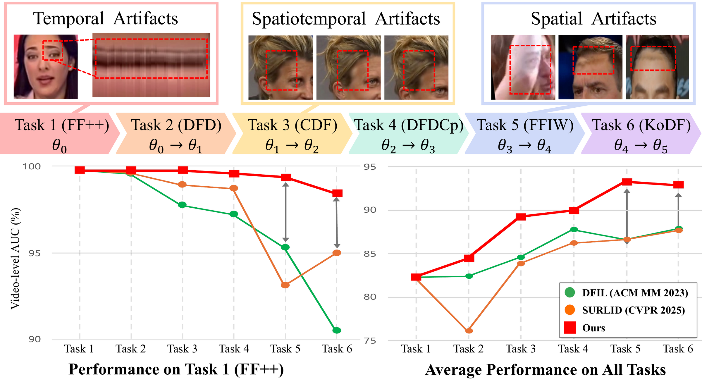
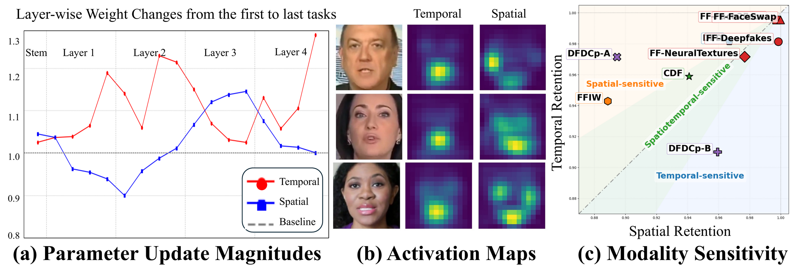
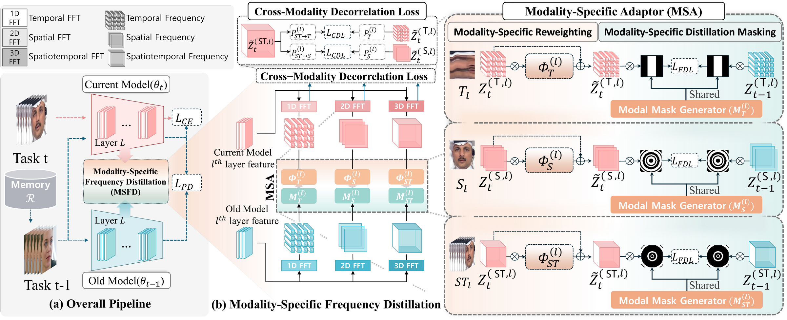
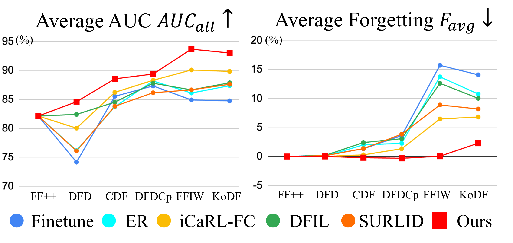
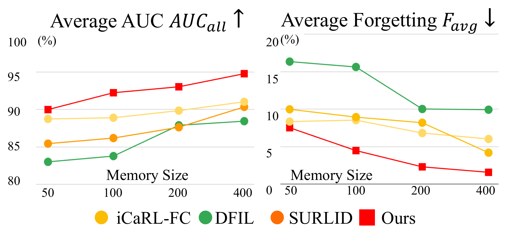

💡 TL;DR
MSFD helps a video deepfake detector learn new fake videos without forgetting old ones. It keeps spatial, temporal, and spatiotemporal cues separately.

Continual video deepfake detection. The model learns datasets one by one. MSFD keeps important old knowledge better than previous methods.
Abstract
Video deepfakes are changing quickly, so detectors must keep learning new fake patterns. The problem is that learning new data often makes the model forget old data.
We propose MSFD, which preserves spatial, temporal, and spatiotemporal cues separately. This helps the detector adapt to new deepfakes while keeping strong performance on previous ones.
Motivation
Why modality-specific preservation?
Different deepfake videos leave different clues. Some show spatial artifacts, some show temporal artifacts, and some show both. So, treating all cues as one mixed feature can easily cause forgetting.

Analysis. Spatial and temporal cues affect the model differently. This supports preserving each cue separately.
Method
Modality-Specific Frequency Distillation
MSFD compares the current model with the previous model in the frequency domain. It separately preserves spatial, temporal, and spatiotemporal cues.

MSFD pipeline. Each cue is distilled separately, and redundant information between cues is reduced.
Modality-wise Frequency Transform
Separates video features into spatial, temporal, and spatiotemporal frequency cues.
Modality-Specific Adaptor (MSA)
Highlights useful frequency bands for each cue instead of using fixed filters.
Cross-Modality Decorrelation Loss (CDL)
Encourages each cue to keep different information, reducing overlap between branches.
Experiments
Results
Protocol 1 · Dataset-Incremental
MSFD achieves the highest overall AUC under Protocol 1 while maintaining low forgetting.
| Method | FF++ | DFD | CDF | DFDCp | FFIW | KoDF | AUCall ↑ | Favg ↓ |
|---|---|---|---|---|---|---|---|---|
| iCaRL-FC | 96.82 | 94.65 | 80.50 | 79.20 | 88.77 | 99.07 | 89.84 | 6.81 |
| DCE (ICML 2025) | 99.63 | 96.05 | 72.97 | 83.93 | 90.40 | 90.91 | 88.98 | 0.07 |
| IDER (ICLR 2026) | 95.32 | 96.26 | 93.62 | 80.09 | 83.80 | 97.48 | 91.10 | 2.97 |
| STSP (ECCV 2024) | 99.48 | 92.67 | 83.76 | 77.15 | 82.78 | 98.35 | 89.03 | 3.98 |
| DFIL (ACM MM 2023) | 90.51 | 92.02 | 78.86 | 74.58 | 91.52 | 99.76 | 87.88 | 10.02 |
| SURLID (CVPR 2025) | 94.98 | 90.25 | 83.20 | 81.30 | 76.81 | 99.12 | 87.61 | 8.19 |
| MSFD (Ours) | 98.42 | 91.15 | 90.17 | 84.14 | 94.88 | 99.36 | 93.02 | 2.29 |
Selected rows from Table 1. Video-level AUC (%) after the final task. Full comparison is provided in the paper.
Sequential trends

MSFD keeps forgetting low as more tasks are added.
Memory efficiency

MSFD remains strong even with a small memory buffer.
BibTeX
The BibTeX entry will be updated once the ECCV 2026 proceedings are published. Stay tuned!